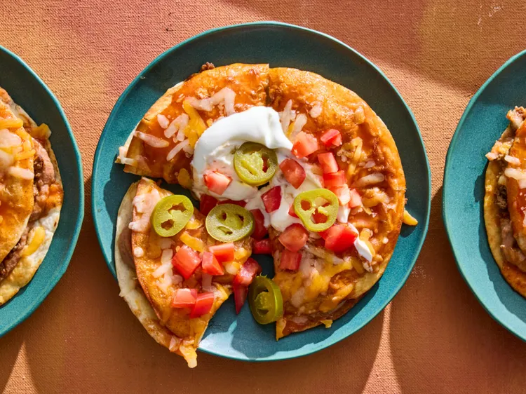

Copycat Mexican-Style Pizzas

Description
If you’ve ever craved the nostalgic crunch and bold flavors of Taco Bell’s Mexican Pizza, this homemade version delivers all the same satisfaction—only fresher and even more delicious.
By Jaelyn Luong _ Published on March 17, 2026
Ingredients
- 1 pound ground beef
- 3 tablespoons Taco Bell-Style Seasoning
- 1/4 cup vegetable oil, plus more as needed
- 12 (6-inch) flour tortillas
- 1 (16-ounce) can refried beans
- 2 cups shredded Mexican-style cheese blend (8 ounces)
- 1 (10-ounce) can enchilada sauce
- 4 medium Roma tomatoes, chopped (about 1 cup)
- 1/2 cup sour cream
- pickled jalapeño slices (optional)
Steps
- Preheat the oven to 350 degrees F (175 degrees C). Cook beef and Taco Bell-Style Seasoning in a large skillet over medium heat, stirring and breaking up lumps, until beef is browned, 6 to 8 minutes. Transfer beef to a plate; pour off grease.
- Heat oil in same skillet over medium heat. Working with 1 tortilla at a time, fry tortillas, turning halfway through, until lightly toasted, about 1 minute. Transfer to a paper towel-lined plate to drain. Repeat with remaining tortillas, adding more oil as needed.
- Arrange 6 fried tortillas on a 13x18-inch rimmed baking sheet. Spread a thin layer of refried beans on tortillas; top evenly with beef mixture and 1 cup cheese. Top with remaining 6 fried tortillas. Spoon enchilada sauce evenly over top.
- Bake until cheese is melted and tortillas are crisp, about 10 minutes. Top with remaining 1 cup cheese and bake until melted on top, about 5 minutes more. Top with tomatoes, sour cream, and jalapeños (if using). Cut into wedges to serve.
Return to Homepage